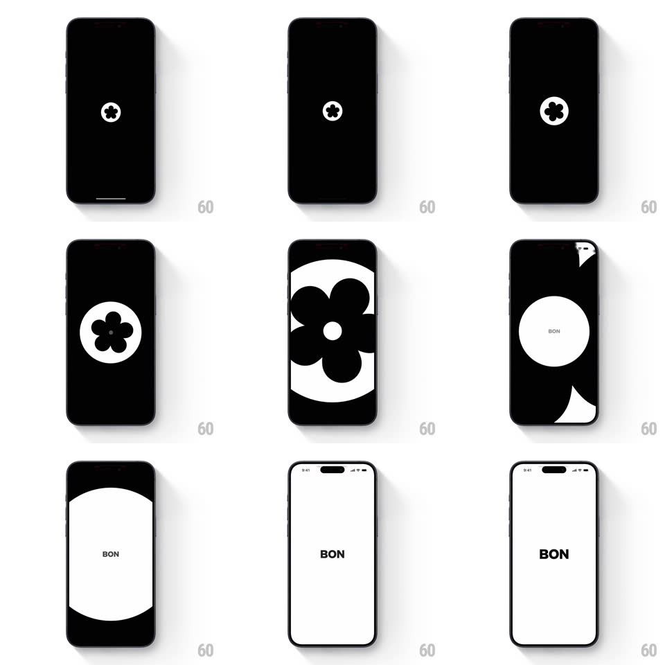

Media
Frame-by-frame

Rebuild this animation 1:1: BON's splash - a small white circle holding the black flower logo scales up until the flower fills the screen inverted, then wipes to the white home screen with the BON wordmark.

Rebuild this animation 1:1: BON's splash - a small white circle holding the black flower logo scales up until the flower fills the screen inverted, then wipes to the white home screen with the BON wordmark. ## Integration Integration: stack-agnostic spec - springs given as stiffness/damping, timed motions as duration + curve; map every value to your framework and animation library of choice. ## Scene Stage 1: a black screen with a small white circle at center containing the black five-petal flower mark. Mid-transition: the circle grows until the flower itself is the full-screen graphic (black flower on white). Stage 2: a clean white screen with the centered "BON" wordmark in black and the status bar visible. ## Motion spec Pattern: logo circle scale-up reveal from black splash to white home. - The white circle fades in at center (scale 0.8 -> 1, 300ms) on the black field and holds for ~600ms. - The circle then scales up aggressively (scale 1 -> 3.2, 500ms, ease-in) so the flower grows past the frame edges - at peak the screen reads as a giant black flower on white (the inversion happens inside the growing circle, not as a color flip). - As the flower's petals reach the screen edges, the black outside the circle wipes away in one quick radial sweep (250ms), settling the white background. - The "BON" wordmark fades in at center (opacity 0 -> 1 with a 6px rise, 300ms) as the sweep finishes; the status bar fades in with it (200ms). - Total sequence ~2s, then it holds - no looping. ## Calibration - The flower is solid black with five rounded petals and a small center dot - keep it geometric, no gradients. - The scale-up accelerates (ease-in) - the snap into the full-screen flower is the payoff. ## Reduced motion Simple 300ms crossfade from the black logo splash to the white BON screen. ## Don't miss - The transition inverts the mark: white-circle-with-black-flower becomes black-flower-on-white - both directions of the figure-ground must read cleanly. - The home screen is stark: white field, centered black BON, nothing else.